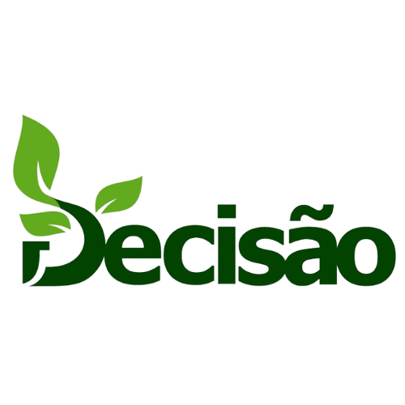

Comprometida em vestir e alimentar o mundo!
Principais Culturas
Feijão
O feijão é um dos mais importantes constituintes da dieta do brasileiro, por ser reconhecidamente uma excelente fonte protéica, além de possuir bom conteúdo de carboidratos e de ser rico em ferro. Cultivado por pequenos e grandes produtores, em diversificados sistemas de produção e em todas as regiões brasileiras, o feijoeiro comum reveste-se de grande importância econômica e social. Com o uso da irrigação é possível regularizar a oferta de feijão, melhorar a qualidade da cultivar produzida e reduzir seu custo. A irrigação tem todos os requisitos favoráveis para melhorar a qualidade do feijão, além de criar um desenvolvimento da cultura e proporcionar um ambiente favorável de colheita, ou seja, produzir mais e de melhor qualidade. De acordo com José Roberto de Menezes, consultor de Manejo de Sistemas Tropicais Irrigados, em entrevista ao portal Notícias Agrícolas, a produtividade média de sequeiro no Brasil é de 550kg por hectare contra a produtividade de 2.400kg por hectare no cultivo irrigado. Mais de 5 vezes a produtividade média. Isso significa o uso racional de água e de fertilizantes, além da redução expressiva da mão de obra e do maquinário empregado. Como característica de uma cultura com preços que variam muito de safra para safra, o feijão irrigado tem uma série de vantagens, e uma das certezas é a de que a produção não será perdida em períodos de veranico.
Milho
Dentre os cereais cultivados no Brasil, o milho é o mais expressivo, com cerca de 75,455 milhões de toneladas de grãos produzidos em uma área de aproximadamente 15,466 milhões de hectares (Conab, 2014) referente a duas safras, normal e safrinha. Por suas características fisiológicas, a cultura do milho tem alto potencial produtivo, já tendo sido obtida produtividade superior a 17ton/ha em concursos de produtividade de milho conduzidos por órgãos de assistência técnica e extensão rural e por empresas produtoras de semente. No entanto, o nível médio nacional de produtividade esta por volta de cerca de 4.864 kg ha-1, ainda considerado baixo pelo potencial produtivo da cultura, demonstrando que o manejo cultural do milho deve ser ainda bastante aprimorado para se obter aumento na produtividade e na rentabilidade que a cultura pode proporcionar.
Soja
O Brasil é o segundo maior produtor mundial de soja, atrás apenas dos EUA. Na safra 2016/2017, a cultura ocupou uma área de 33,89 milhões de hectares, o que totalizou uma produção de 113,92 milhões de toneladas. A produtividade média da soja brasileira foi de 3.362 kg por hectare. No final da década de 60, dois fatores internos fizeram o Brasil começar a enxergar a soja como um produto comercial, fato que mais tarde influenciaria no cenário mundial de produção do grão. Na época, o trigo era a principal cultura do Sul do Brasil e a soja surgia como uma opção de verão, em sucessão ao trigo. O Brasil também iniciava um esforço para produção de suínos e aves, gerando demanda por farelo de soja. Em 1966, a produção comercial de soja já era uma necessidade estratégica, sendo produzidas cerca de 500 mil toneladas no País. Os investimentos em pesquisa levaram à "tropicalização" da soja, permitindo, pela primeira vez na história, que o grão fosse plantado com sucesso, em regiões de baixas latitudes, entre o trópico de capricórnio e a linha do equador. Essa conquista dos cientistas brasileiros revolucionou a história mundial da soja e seu impacto começou a ser notado pelo mercado a partir do final da década de 80 e mais notoriamente na década de 90, quando os preços do grão começaram a cair. Atualmente, os lideres mundiais na produção mundial de soja são os Estados Unidos, Brasil, Argentina, China, Índia e Paraguai.
Algodão
O algodão é uma das culturas mais versáteis e da qual se obtém vários produtos, como óleo, alimento animal e fibra têxtil. O algodão está entre as culturas mais importantes de fibra no mundo. Em média, 35 milhões de hectares de algodão são plantadas anualmente em todo o planeta. Essa cultura atualmente tem sido plantada por mais de 60 países nos cinco continentes. O Brasil nos últimos anos tem se mantido entre os cinco principais produtores de algodão do mundo. Ficando ao lado de países como China, Índia Estados Unidos e Paquistão. Além disso, o Brasil também se encontra entre os maiores exportadores mundiais de algodão, sendo os principais compradores a Indonésia, Coreia do Sul e Vietnã.